Operazioni di apertura e di chiusura
Apertura negozio e postazioni
Con Ciao Optical! è necessario procedere in primo luogo all'apertura del Negozio e successivamente all'apertura di ogni Cassa. Le casse sono identificabili con ciascuna delle diverse postazioni da cui viene utilizzato il sistema. Non solo quindi i pc di cassa ma anche tutti i pc da banchetto e gli iPad.
L'operazione di apertura di un negozio è da effettuarsi da un pc fisso di cassa per procedere ad aprire il Negozio. Questa operazione serve per definire la data fiscale del giorno. La barra evidenziata permette di identificare lo status del Negozio (sezione centrale della barra) e della Postazione di cassa in utilizzo (sezione destra della barra): il colore rosso indica chiuso, il colore verde indica aperto.
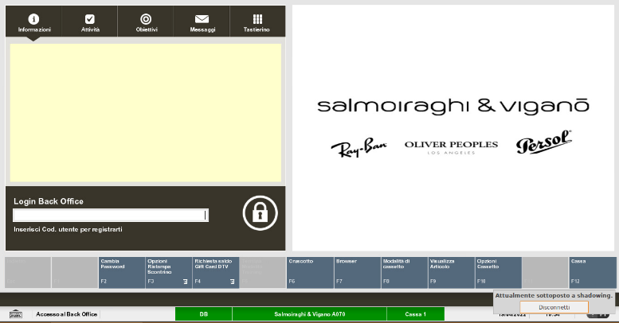
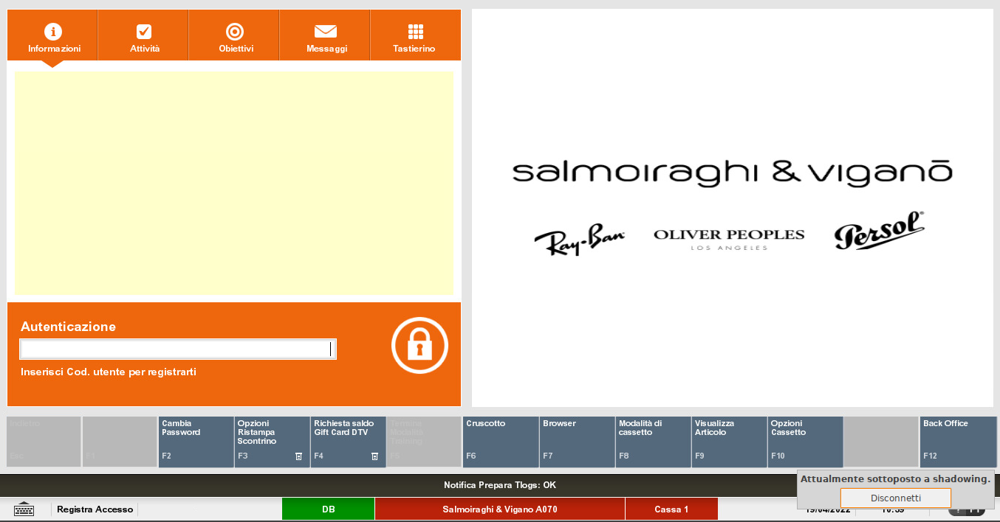
Effettuare l'accesso alla sezione Back Office inserendo le proprie credenziali. Il colore della schermata di XStore da arancione diventa nera per indicare l'accesso avvenuto alla sezione di back office.
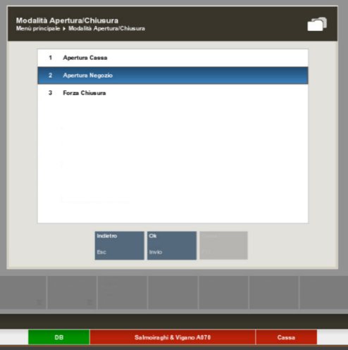
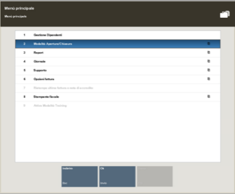
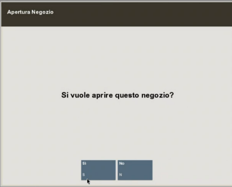
Selezionare la Modalità Apertura/Chiusura e successivamente Apertura Negozio. Dopo aver aperto il negozio, la barra centrale si colora di verde, ad indicare che lo stato del negozio è passato su aperto.Selezionando Sì, viene mostrata la data lavorativa del giorno ed eventuali messaggi lasciati dai colleghi il giorno precedente in fase di chiusura.
A seguire procedere ad aprire la cassa selezionando Apertura Cassa e scegliere Ok. Selezionare Si per confermare l'apertura.
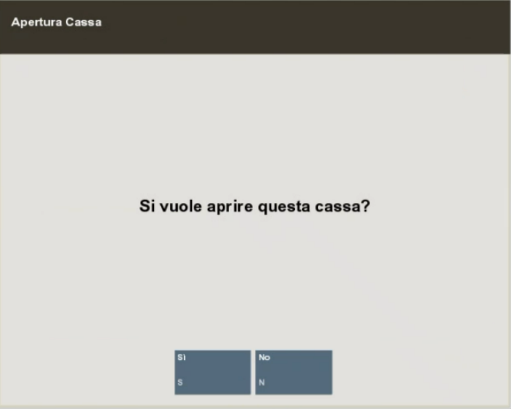
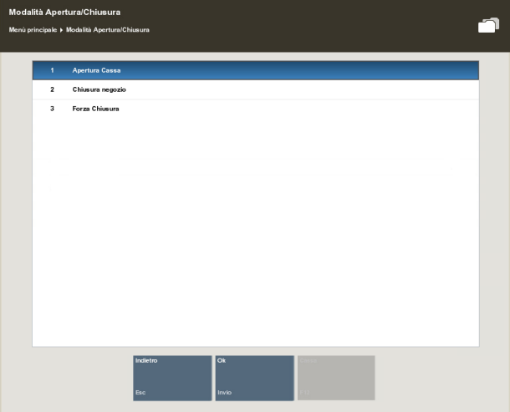
Selezionare sempre Ok per questo pop-up. Solo nel caso in cui una o più delle ultime tre voci (Scartati, Non trovati o Sconosciuto) riportino valori diversi da 0, contattare l'Helpdesk Toshiba per supporto. In ogni caso è possibile procedere.
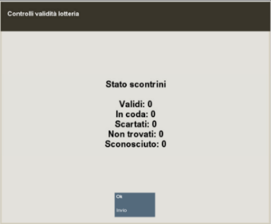
Procedere quindi al conteggio dei contanti presenti nel fondo cassa. Per ogni taglio di contanti è possibile immettere la quantità corretta inserendo la numerica nella barra e selezionando Invio.
Al termine del conteggio selezionare Terminato Conteggio.
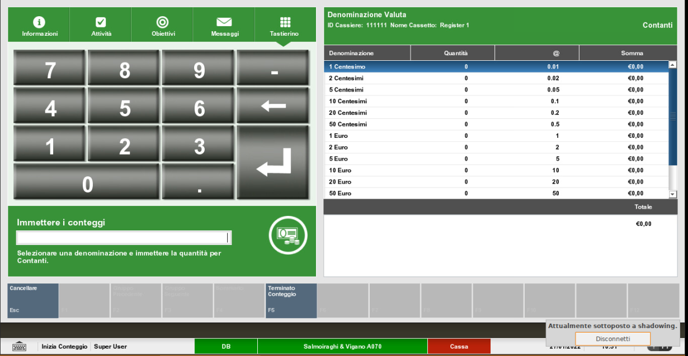
Replicare l'operazione di apertura Cassa per tutte le postazioni presenti in negozio. Per le postazioni con cassetto è richiesto il conteggio del fondo cassa, per tutte le altre (come, ad esempio, per gli iPad o per i pc da banchetto) nonostante venga mostrata la schermata del conteggio, non è necessario effettuarlo poiché non abbinate a un cassetto contanti e quindi procedere direttamente a selezionare Terminato Conteggio.
Se il conteggio inserito non risulta uguale all'ammontare lasciato in chiusura di cassa il giorno prima, si visualizza il messaggio sotto riportato.
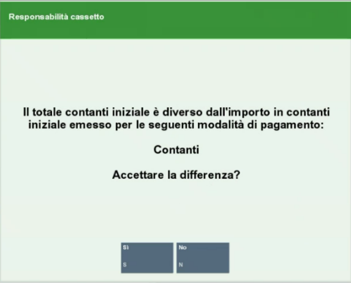
Cliccando su Si, bisogna fornire una motivazione per lo sbilanciamento.
Cliccare su OK.
Chiusura postazioni e negozio
Per chiudere il negozio come primo passaggio è necessario chiudere tutte le postazioni di vendita. Per farlo, accedere a Back Office e selezionare Modalità Apertura/Chiusura e successivamente Chiusura cassa. Ripetere il procedimento per tutte le postazioni (iPad compresi).
Selezionare Si per confermare la chiusura della cassa.
Nel caso in cui non fosse possibile chiudere una cassa (e di conseguenza il negozio) per problemi tecnici è possibile effettuare la chiusura di tutte le casse tramite il comando Forza chiusura. Quest'azione è da effettuare solamente in casi estremi.
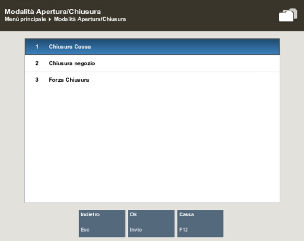
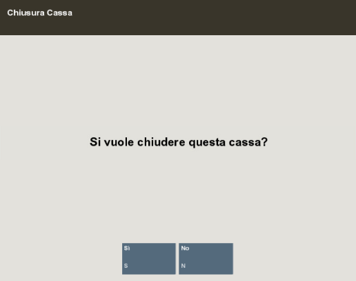
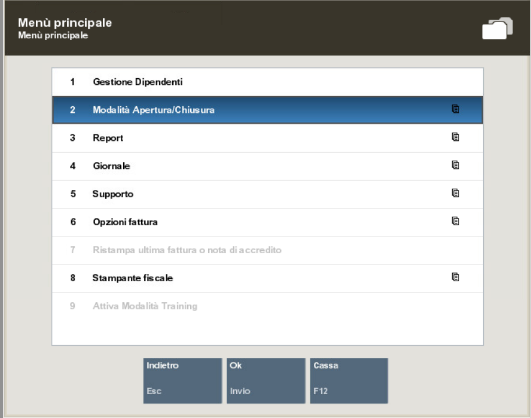
La schermata successiva proposta dal sistema è uno specchietto che confronta quanto registrato dalla stampante fiscale (colonna Totale Stampante) con quanto inserito attraverso il sistema di cassa (colonna Totale Cassetti). Nel caso in cui:
- il Totale Stampante sia inferiore al Totale Cassetti, procedere a registrare le vendite mancanti sulla stampante fiscale.
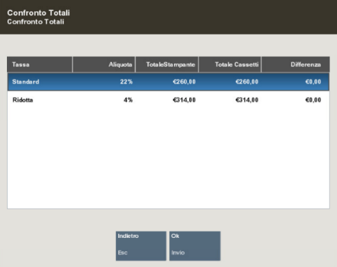
- Il Totale Cassetti sia inferiore al Totale Stampante, procedere a registrare le transazioni mancanti, sul sistema di cassa, usando la funzione di vendita manuale da XStore.
Dopo aver premuto Ok, il sistema propone la schermata per effettuare il conteggio dei contanti. Procedere al conteggio del cassetto nel caso in cui la postazione di cassa interessata ne sia provvista, altrimenti cliccare su Sommario.
Immettere la quantità di pezzi per ciascun taglio di denaro proposto selezionando il taglio interessato e inserendo nella barra la quantità. Al termine del conteggio, cliccare Sommario.
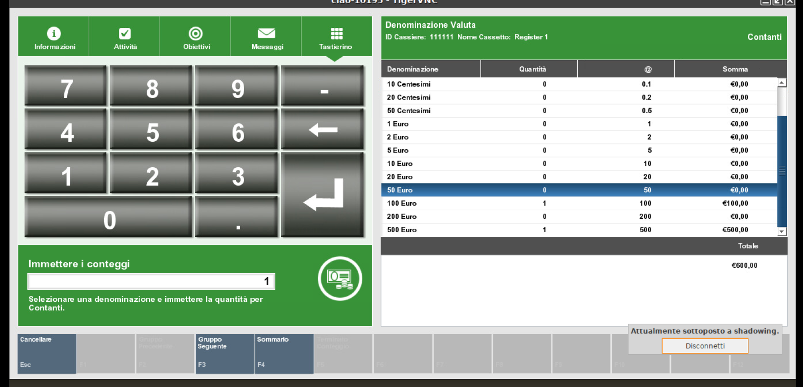
La schermata del Sommario propone l'elenco di tutti i metodi di pagamento con un confronto tra la Somma Dichiarata e la Somma Sistema. Per la voce Contanti la somma dichiarata corrisponde a quanto precedentemente inserito al termine del conteggio dei contanti. Per tutte le altre voci il denaro riportato corrisponde a quanto presente nella colonna Somma Sistema.
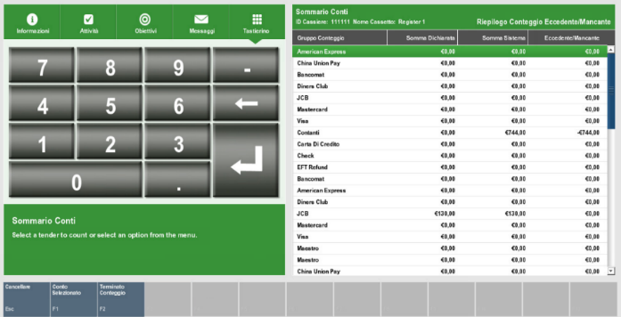
Nel caso in cui, vi sia la necessità di modificare una di queste voci, selezionarla dall'elenco, cliccare Conto selezionato, immettere il valore corretto.
Cliccare Sommario per ritornare alla pagina precedente.
Una volta terminata l'attività, selezionare Terminato Conteggio.
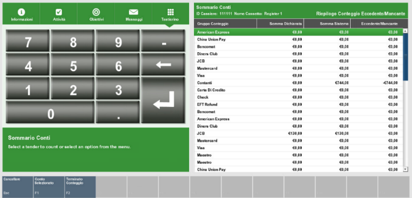
Nel caso in cui il sistema registri una discrepanza, è possibile accettarla o tornare alla schermata precedente per modificare i conteggi. Nel caso di accettazione è richiesto di selezionare una causale come giustificativo e di immettere una nota. Se il conteggio inserito non risulta uguale all'ammontare lasciato in chiusura di cassa il giorno prima, si visualizza il messaggio sotto riportato.
Cliccando su Si, bisogna fornire una motivazione per lo sbilanciamento come in figura:
-
Errore pagamento: nel caso in cui la sera in chiusura ci sia un ammanco o un'eccedenza cassa a causa di un errato resto contante.
-
Crossover: nel caso in cui ci sia un'uscita in una modalità e un'entrata di pari valore in una diversa modalità di pagamento.
-
Differenza corrispettivi: nel caso in cui durante la giornata ci siano stati dei problemi con la cassa fiscale, scontrini bloccati, errati, doppi per cui la sera il totale corrispettivi su Ciao! non corrisponde alla strisciata di chiusura cassa.
-
Altro: altre differenze causate da motivi diversi (ad esempio resi con metodi di pagamento diversi da cash per i quali il cliente non viene rimborsato in store, tipicamente Adaro/RBM)
Cliccare su OK.
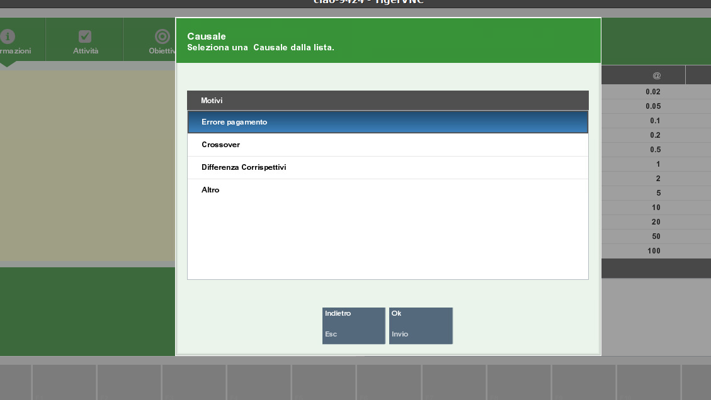
Come ultimo step, Il sistema ti propone l'importo da versare in Cassaforte, tale valore sarà dato dal totale dei contanti contati meno il fondo cassa fisso a 300€. In quanto NON sarà più possibile modificare il valore del fondo cassa.
Suggeriamo quindi di far sì che i 300€ siano composti da più tagli diversi possibili, in modo da poter gestire il contante agevolmente la mattina seguente. Versare quindi in cassaforte quanto proposto dal sistema. In particolare, potrete inserire tutti i tagli in banconote in una busta come già procedura attuale e inserire invece le monete in un sacchetto che conserverete in cassaforte.
Ad esempio: totale contanti presenti in cassetto a fine giornata pari a 536,50€ Il sistema proporrà automaticamente di versare in cassaforte 236,50€. Accettare il valore, lasciare nel cassetto 300€, e spostare in cassaforte i 236,50€.
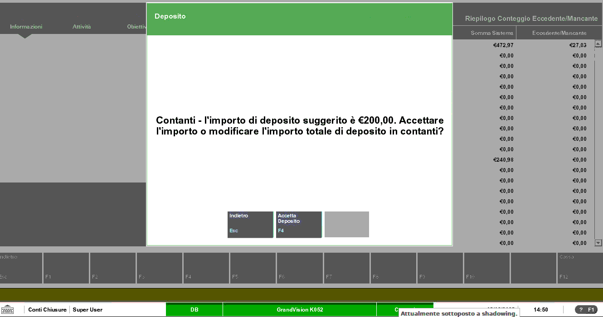
Una volta effettuata la chiusura di cassa, la barra in basso corrispondente alla cassa diventa rossa.
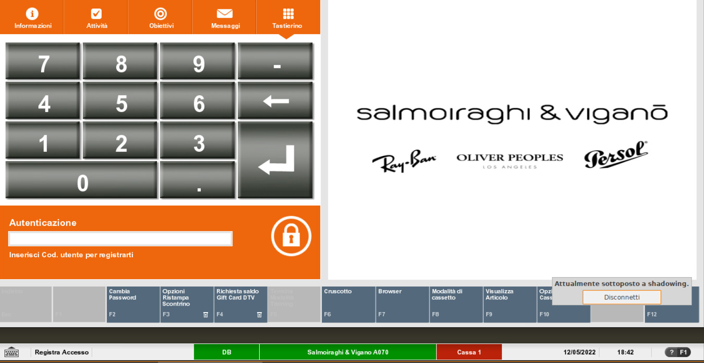
A seguire procedere alla chiusura del negozio selezionando Chiusura Negozio.
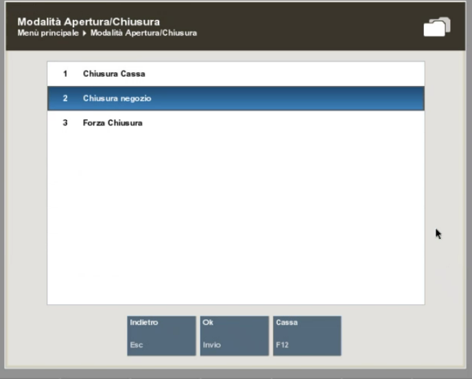
Scegliere Si e lasciare un messaggio di chiusura (visualizzabile all'apertura di negozio il giorno successivo).
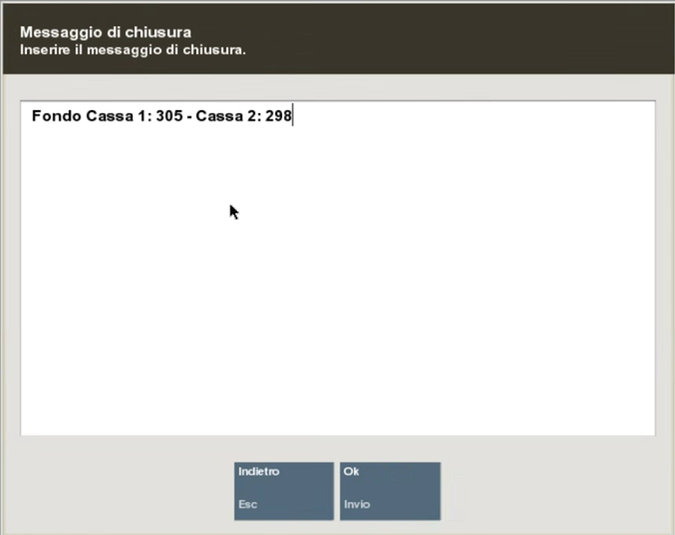
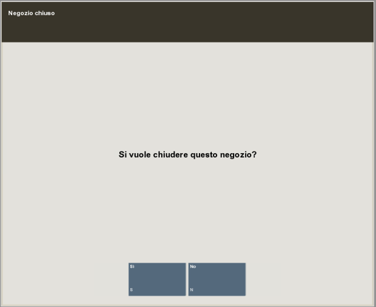
Si consiglia di scrivere all'interno del messaggio di chiusura negozio, per ogni cassa, l'importo di Fondo Cassa precedentemente inserito.
Come visto per la cassa, la barra del negozio diventa rossa indicando che il negozio è stato chiuso.
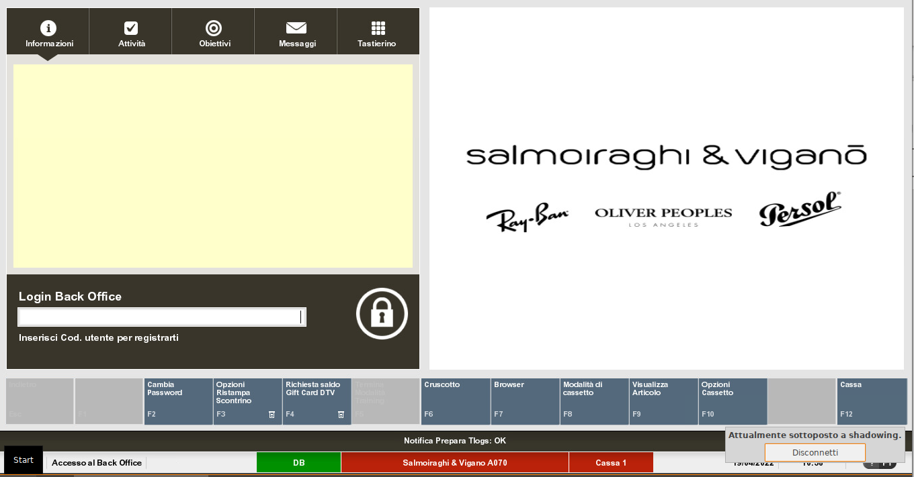